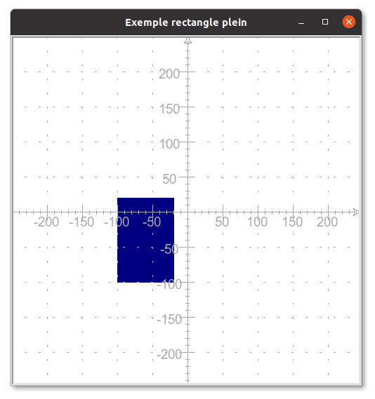
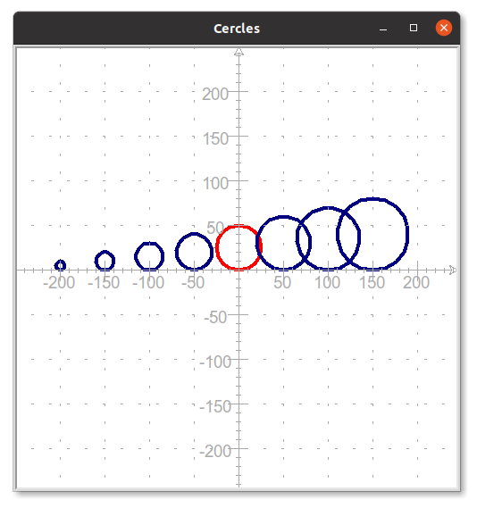

Evaluation de NSI du 02/09/2021
Attention
Tous les programmes demandés doivent être enregistrés dans votre dossier personnel dans Evaluations/DS1/
Exercice 1
On donne ci-dessous le squelette d'un programme Python utilisant le module turtle
import turtle
# Création du "papier" et du "crayon"
crayon = turtle.Turtle()
papier = turtle.Screen()
# Taille, dimension et couleur pour le papier et le crayon
papier.bgcolor("beige")
papier.setup(width=500,height=500)
crayon.color("navy")
crayon.pensize(1)
# Attends un clic pour fermer la fenêtre de dessin
papier.exitonclick()
-
Ajouter à ce programme une fonction
rectangle_plein(x,y,largeur,longueur,couleur)qui construit un rectangle de dimensionslongueurxlargeurrempli avec la couleurcouleuret dont le coin inférieur gauche a pour coordonnées(x,y).
A titre d'exemple, on donne ci-dessous le résultat de l'appel de cette fonction pour tracer le rectangle plein en couleurnavyde dimensions80x120et dont le coin inférieur gauche a pour coordonnées(-100,-100) -
Utiliser cette fonction afin de dessiner un drapeau de la France aux dimensions 300 pixels sur 200 pixels.
Aide
- Les trois rectangles formant le drapeau ont même dimension : 100 pixels sur 200 pixels.
- Les couleurs de chacun des trois rectangles au format (r,v,b) sont :
- (05,20,64) pour le bleu,
- (255,255,255) pour le blanc,
- (236,25,32) pour le rouge.
- Consulter la documentation de turtle pour savoir comment fixer la couleur du crayon à une couleur sous ce format.
Exercice 2
Réaliser le dessin suivant à l'aide du module turtle, votre programme devra impérativement utilisé :
- une boucle
- une instruction conditionnelle

On précise que :
- Les rayon des cercles sont 5, 10, 15 et ainsi de suite en augmentant de 5.
- Seul le cercle de rayon 25 est rouge
- Les cercles sont tangents à l'axe des abscisses en
(-200,0),(-150,0),(-100,0)et ainsi de suite en augmentant l'abcisse de 50 à chaque fois.
Exercice 3 (d'après épreuve pratique du BAC)
Écrire une fonction python appelée nb_repetitions qui prend en paramètres un
élément elt et une liste l et renvoie le nombre de fois où l’élément apparaît dans la
liste.
Exemples :
>>> nb_repetitions(5,[2,5,3,5,6,9,5])
3
>>> nb_repetitions('A',[ 'B', 'A', 'B', 'A', 'R'])
2
>>> nb_repetitions(12,[1, '! ',7,21,36,44])
0
Aide
Penser à écrire une chaîne de documentation pour votre fonction et à tester les préconditions éventuelles sur les arguments.
Exercice 4 (d'après épreuve pratique du BAC)
Le jeu du « plus ou moins » consiste à deviner un nombre entier choisi entre 1 et 99. Un élève de NSI décide de le coder en langage Python de la manière suivante :
- le programme génère un nombre entier aléatoire compris entre 1 et 99 ;
- si la proposition de l’utilisateur est plus petite que le nombre cherché, l’utilisateur en est averti. Il peut alors en tester un autre ;
- si la proposition de l’utilisateur est plus grande que le nombre cherché, l’utilisateur en est averti. Il peut alors en tester un autre ;
- si l’utilisateur trouve le bon nombre en 10 essais ou moins, il gagne ;
- si l’utilisateur a fait plus de 10 essais sans trouver le bon nombre, il perd.
La fonction randint est utilisée. Si a et b sont des entiers, randint(a,b) renvoie un
nombre entier compris entre a (inclus) et b (inclus).
Compléter le code ci-dessous et le tester :
from random import randint
def plus_ou_moins():
nb_mystere = randint(1,...)
nb_test = int(input("Proposez un nombre entre 1 et 99 : "))
compteur = ...
while nb_mystere != ... and compteur < ... :
compteur = compteur + ...
if nb_mystere ... nb_test:
nb_test = int(input("Trop petit ! Testez encore : "))
else:
nb_test = int(input("Trop grand ! Testez encore : "))
if nb_mystere == nb_test:
print ("Bravo ! Le nombre était ",...)
print("Nombre d'essais: ",...)
else:
print ("Perdu ! Le nombre était ",...)